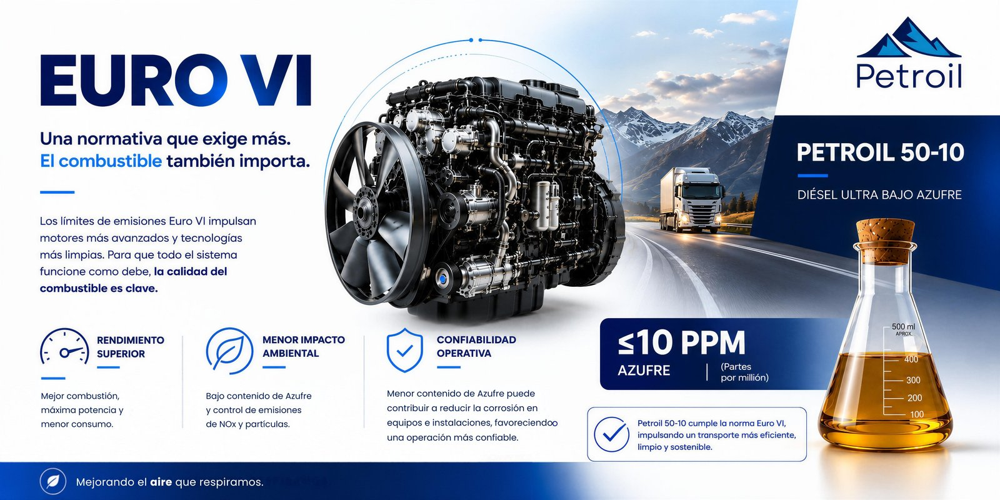

Euro VI: por qué la calidad del combustible importa tanto como la tecnología del motor
Los motores más avanzados solo cumplen su función si el combustible que los alimenta está a la altura. Así entra en juego Petroil 50-10.
Cuando se habla de Euro VI, la conversación casi siempre gira alrededor del motor: mejores sistemas de inyección, catalizadores más sofisticados, filtros de partículas.
Y es cierto que ahí ocurre buena parte de la innovación. Pero hay una pieza que rara vez recibe el mismo protagonismo, y sin la cual toda esa tecnología simplemente no funciona: el combustible.
Euro VI, con precisión
Vale la pena aclarar algo que suele confundirse. Euro VI —en números romanos— es la norma que aplica a vehículos pesados: camiones y buses. Euro 6 —en números arábigos— regula vehículos livianos.
Ambas comparten filosofía y van endureciendo los límites de emisiones generación tras generación, pero no son la misma norma. Para el transporte de carga y la operación industrial, que mueven buena parte de la economía del país, es Euro VI la que realmente aplica.
La pieza que casi nadie menciona
Los motores Euro VI reducen emisiones de óxidos de nitrógeno (NOx) y material particulado mediante tecnologías como los sistemas de reducción catalítica selectiva (SCR) y los filtros de partículas diésel (DPF).
El problema es que estos sistemas son extremadamente sensibles al azufre: un combustible con demasiado azufre satura y desactiva el catalizador, y el motor termina emitiendo más de lo que la norma permite, sin importar qué tan avanzada sea su tecnología.
Euro VI no es únicamente una norma de motores. En la práctica, es una norma que exige un combustible distinto.
Lo que ya exige Colombia
Esto no es un escenario a futuro. La normativa colombiana que adopta los criterios de Euro VI estableció que, desde el 1 de enero de 2023, el contenido de azufre permitido en el diésel (ACPM) debía estar entre 15 y 10 partes por millón (ppm).
Y que a partir del 1 de enero de 2025 ese límite no puede superar las 10 ppm en ningún caso. Para dimensionar el salto: hace apenas un par de décadas, el diésel convencional podía contener miles de ppm de azufre. Hoy la norma exige una fracción mínima de esa cifra.
Más allá del azufre: cuatro frentes que definen la calidad de un diésel
El azufre es el parámetro más determinante para Euro VI, pero no el único que define si un combustible está a la altura de un motor moderno. En términos generales, la calidad del diésel se evalúa en cuatro frentes:
Desempeño del motor
El número de cetano y la lubricidad determinan qué tan eficiente es la combustión y cuánto desgaste sufren los componentes de inyección.
Impacto ambiental
Además del azufre, factores como los residuos de carbón influyen directamente en las emisiones y en la formación de partículas.
Seguridad industrial
El punto de inflamación y la conductividad eléctrica son clave para el manejo, transporte y almacenamiento seguro del combustible.
Transición energética
Cada contaminante que se reduce hoy en el combustible es una emisión que no habrá que compensar mañana.
Petroil 50-10: la respuesta en la práctica
Petroil 50-10 es diésel de ultra bajo azufre, con un máximo de 10 ppm — el límite más exigente que contempla la normativa colombiana, y el que efectivamente necesitan los motores Euro VI para que su tecnología de control de emisiones funcione como fue diseñada.
No es una cifra decorativa: es la diferencia entre un catalizador que cumple su función durante toda la vida útil del motor y uno que se degrada antes de tiempo.

El motor solo cumple su parte
La transición hacia un transporte más limpio no depende únicamente de fabricar mejores motores. Depende, en igual medida, de qué combustible los alimenta.
Euro VI lo exige por norma; en Petroil lo asumimos como estándar.